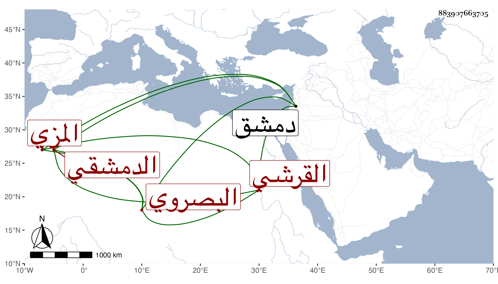

0902Sakhawi.DawLamic.ITO20230111-ara1.EIS1600.883907663705
Biography ID: 883907663705
367
عبد الوهاب بن إسماعيل بن عمر بن كثير بن ضوء بن درع التاج بن الحافظ العماد القرشي البصروي الدمشقي المزي ويعرف كأبيه بابن كثير . ولد في ثالث عشر ذي الحجة سنة سبع وستين وسبعمائة وسمع من أبيه والمحب الصامت وأحمد بن عبد الغالب الماكسيني بل رأيت في تاريخ أبيه سماعه على ابن أميلة بمشاركة أبيه للجزء العاشر من الترمذي بكماله بقراءة الشهاب أحمد بن العماد الحسباني في رجب سنة أربع وسبعين بدار قتح الدين بن الشهيد وكان صاحب الترجمة يذكر أنه سمع عليه غير ذلك وليس ببعيد وحدث سمع منه الفضلاء . مات في ذي القعدة سنة أربعين بدمشق أرخه شيخنا في إنبائه وقال غيره في ثامن عشري شوال .
